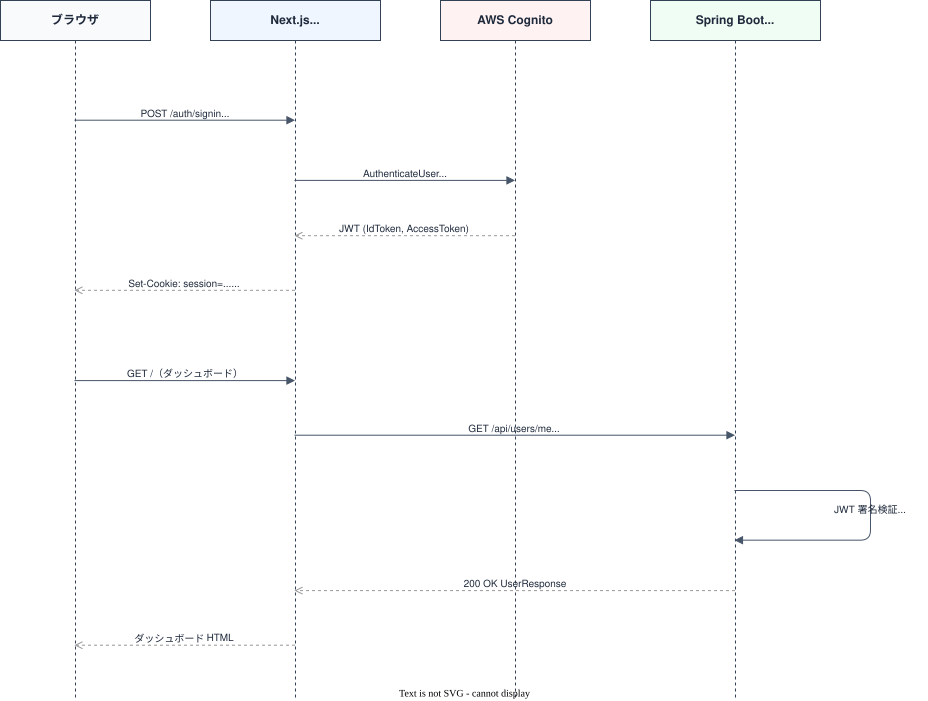
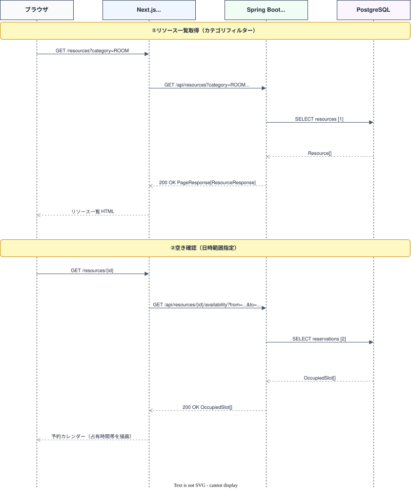
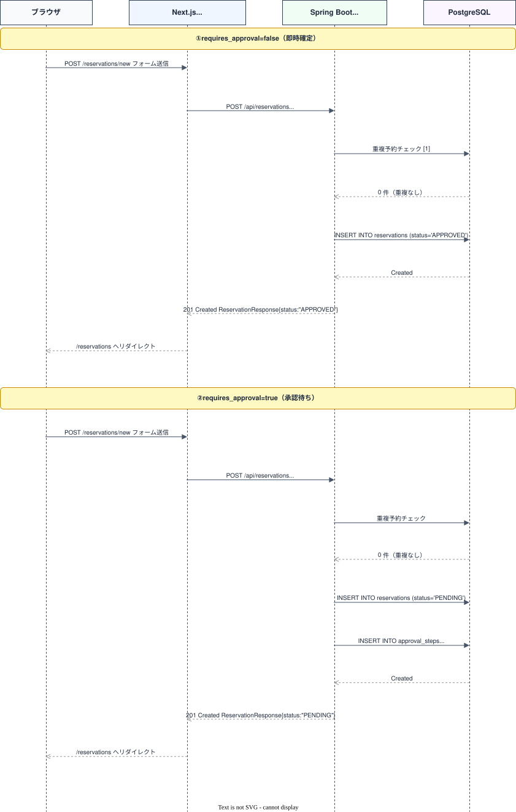
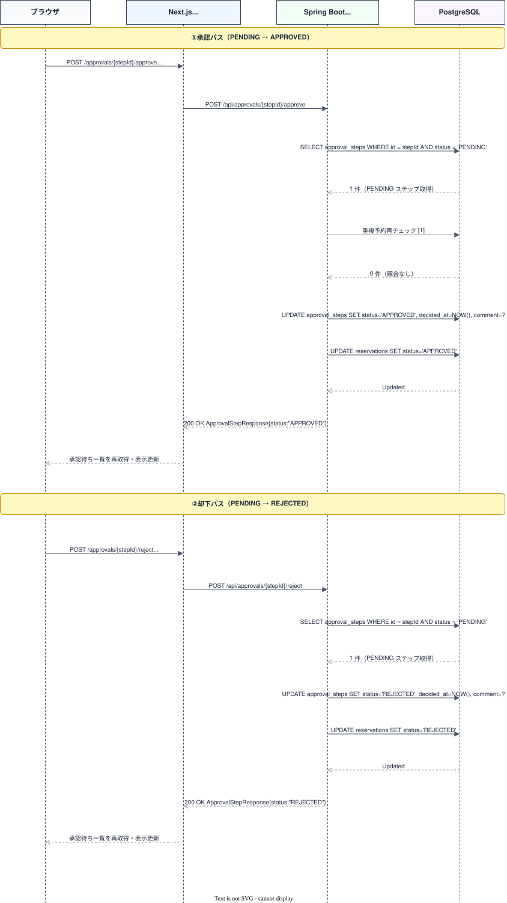
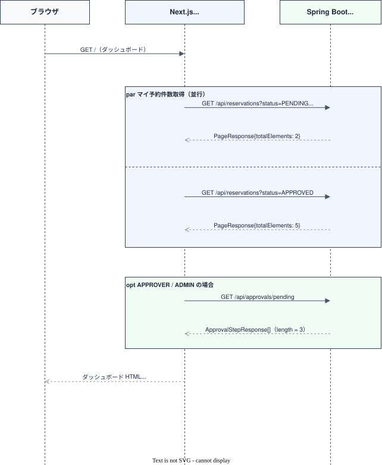

REST API 仕様書¶
API 設計方針¶
| 項目 | 方針 |
|---|---|
| ベース URL | /api プレフィックスを全エンドポイントに付与 |
| リソース命名 | /api/<複数形> の REST 命名規則（例：/api/resources・/api/reservations） |
| バージョニング | バージョニングなし（URL パスに /v1 等を含めない） |
| 認証方式 | Bearer JWT（Cognito 発行）。詳細は§共通 認証方式を参照 |
| レスポンス形式 | JSON（Content-Type: application/json） |
| 日時フォーマット | ISO 8601 ローカル日時・オフセットなし（詳細は§共通 日時フォーマット） |
| エラー形式 | 全エラーを共通フォーマット { "code", "message" } で返却（詳細は§共通 共通エラーレスポンス） |
§共通¶
認証方式¶
全エンドポイント（POST /api/auth/signout を除く）はリクエストヘッダーに AWS Cognito が発行した JWT を付与すること。
- JWT の検証は Spring Security（OAuth2 Resource Server）が行う
- JWT の
custom:roleクレームからロールを取得し、権限チェックに使用する - 認証トークンが不正・期限切れの場合は
401 Unauthorizedを返す - JWT は有効だが
usersテーブルに未登録のユーザーの場合も401 Unauthorized（code: UNAUTHORIZED）を返す - トークンは認証済みだが操作権限がない場合は
403 Forbiddenを返す
日時フォーマット¶
リクエスト、レスポンスの日時（本書で型 TIMESTAMP と表記するフィールド、クエリパラメータ）は、すべて ISO 8601 拡張形式のローカル日時（タイムゾーンオフセットなし）で表現する。
バックエンドの DTO が java.time.LocalDateTime のため、Z やオフセット（+09:00 等）は付与されない。タイムゾーン変換はサーバー、DB、クライアント間で行わない。
2026-06-02T10:00:00 ← 小数秒なし（秒以下が 0 の場合）
2026-06-06T06:49:53.199576 ← 小数秒あり（DB TIMESTAMP のマイクロ秒精度に由来）
- レスポンス：小数秒は値が存在する場合のみ出力される（可変）。クライアントは小数秒の有無どちらもパースできること（
createdAt/updatedAt等のサーバー生成日時には小数秒が付くことが多い）。 - リクエスト：
2026-06-02T10:00:00形式（秒まで）で送信する。オフセット付き（...+09:00/...Z）はクエリパラメータ、リクエストボディとも400 Bad Request（code: VALIDATION_ERROR）となる。
共通エラーレスポンス¶
エラー発生時は以下の JSON 形式で返却する。
HTTP ステータスコード一覧¶
| ステータス | 意味 | 例 |
|---|---|---|
400 Bad Request |
リクエストのバリデーション失敗 | 必須フィールド未入力・パラメータの形式不正・必須クエリパラメータ欠落 |
401 Unauthorized |
認証トークン未設定・不正・期限切れ | JWT なし・期限切れ JWT・JWT は有効だが DB 未登録のユーザー |
403 Forbidden |
認証済みだが操作権限なし | MEMBER が /api/resources に POST |
404 Not Found |
指定リソースが存在しない | 存在しない ID を指定 |
409 Conflict |
競合（重複予約） | 同一リソース・同一時間帯に承認済み or 承認待ち予約が存在する |
422 Unprocessable Entity |
業務ルール違反 | 終了日時 ≦ 開始日時・PENDING 以外の予約の更新・決済済みステップへの再操作 |
500 Internal Server Error |
サーバー内部エラー | 予期しない例外 |
エラーコード一覧¶
| コード | HTTP | 説明 |
|---|---|---|
VALIDATION_ERROR |
400 / 422 | バリデーション失敗。フィールド単体の違反（必須未入力・文字数超過・形式不正）は 400、業務ルール違反（日時整合性・ステータスガード）は 422 |
UNAUTHORIZED |
401 | 認証が必要 |
FORBIDDEN |
403 | 操作権限なし |
NOT_FOUND |
404 | 指定リソースが存在しない |
RESERVATION_CONFLICT |
409 | 重複予約 |
COMMENT_REQUIRED |
400 | 却下コメントが欠落または空（承認操作固有） |
APPROVAL_STEP_NOT_FOUND |
404 | 指定承認ステップが存在しない（承認操作固有） |
APPROVAL_ALREADY_DECIDED |
422 | 決済済みステップ（または PENDING 以外の予約）への再操作（承認操作固有） |
APPROVER_NOT_AVAILABLE |
422 | 承認者（APPROVER ロール）が存在しない（予約申請時。seed データ未投入等の設定ミス） |
INTERNAL_SERVER_ERROR |
500 | サーバー内部エラー |
ページネーション規約¶
一覧系エンドポイント（/api/resources、/api/reservations、/api/users）は Spring Data Pageable 準拠の page/size 方式を採用する。
リクエストクエリパラメーター¶
| パラメーター | 型 | デフォルト | 説明 |
|---|---|---|---|
page |
integer | 0 |
ページ番号（0 始まり） |
size |
integer | 20 |
1 ページあたりの件数 |
レスポンス構造¶
Spring Data の Page<T> をそのまま JSON 化して返却する。
{
"content": [ ...items... ],
"totalElements": 42,
"totalPages": 3,
"number": 0,
"size": 20,
"numberOfElements": 20,
"first": true,
"last": false,
"empty": false,
"pageable": { ... },
"sort": { ... }
}
| フィールド | 説明 |
|---|---|
content |
当該ページのアイテム配列 |
totalElements |
全件数 |
totalPages |
総ページ数 |
number |
現在のページ番号（0 始まり） |
size |
1 ページあたりの件数 |
numberOfElements |
当該ページの実件数 |
first / last |
先頭 / 末尾ページか |
empty |
content が空か |
pageable / sort |
Spring Data 内部のページング・ソート情報オブジェクト（クライアントは使用しない） |
フロントエンドが利用するのは
content/totalElements/totalPages/number/size/first/lastの主要フィールドのみ。本書の各エンドポイントのレスポンス例も主要フィールドのみを抜粋して記載する。
GET /api/approvals/pending、GET /api/departmentsはページネーション不要（件数が少ない想定）。全件返却。
エンドポイント一覧¶
認証¶
| メソッド | パス | 概要 | 権限 |
|---|---|---|---|
| POST | /api/auth/signout |
サインアウト | 認証不要 |
ユーザー・部署¶
| メソッド | パス | 概要 | 権限 |
|---|---|---|---|
| GET | /api/users/me |
自プロフィール取得 | 全ロール |
| GET | /api/users |
ユーザー一覧 | ADMIN |
| GET | /api/departments |
部署一覧 | 全ロール |
リソース¶
| メソッド | パス | 概要 | 権限 |
|---|---|---|---|
| GET | /api/resources |
リソース一覧（カテゴリ・空き日時でフィルタ可、並び替え可） | 全ロール |
| POST | /api/resources |
リソース登録 | ADMIN |
| GET | /api/resources/{id} |
リソース詳細 | 全ロール |
| PUT | /api/resources/{id} |
リソース更新 | ADMIN |
| PATCH | /api/resources/{id}/status |
有効/無効切替 | ADMIN |
| GET | /api/resources/{id}/availability |
空き状況照会（日付範囲指定） | 全ロール |
予約¶
| メソッド | パス | 概要 | 権限 |
|---|---|---|---|
| GET | /api/reservations |
予約一覧（自分の予約。ADMIN は全件） | 全ロール |
| POST | /api/reservations |
予約申請 | 全ロール |
| GET | /api/reservations/{id} |
予約詳細 | 全ロール（本人 or APPROVER/ADMIN） |
| PUT | /api/reservations/{id} |
予約内容更新（PENDING のみ） | 申請者本人 |
| POST | /api/reservations/{id}/cancel |
キャンセル | 申請者本人 or ADMIN |
承認¶
| メソッド | パス | 概要 | 権限 |
|---|---|---|---|
| GET | /api/approvals/pending |
承認待ち一覧 | APPROVER / ADMIN |
| POST | /api/approvals/{stepId}/approve |
承認（stepId = approval_steps.id） |
APPROVER / ADMIN |
| POST | /api/approvals/{stepId}/reject |
却下（stepId = approval_steps.id） |
APPROVER / ADMIN |
§認証¶
POST /api/auth/signout（サインアウト）¶
リクエスト¶
認証トークン不要（サインアウト処理のため）。
レスポンス（200 OK）¶
ボディなし。
注意：バックエンドはステートレス JWT のためサーバー側のセッション無効化は行わない（200 を返すのみ）。実際のセッション Cookie の破棄はフロントエンド（Better Auth）が担当する。
GET /api/users/me（自プロフィール取得）¶
リクエスト¶
レスポンス（200 OK）¶
{
"id": "550e8400-e29b-41d4-a716-446655440001",
"name": "山田 太郎",
"email": "yamada@example.com",
"role": "MEMBER",
"departmentId": "550e8400-e29b-41d4-a716-446655440010",
"departmentName": "開発部",
"createdAt": "2025-04-01T09:00:00"
}
UserResponse 型定義
| フィールド | 型 | 説明 |
|---|---|---|
id |
UUID | ユーザー ID |
name |
string | 表示名 |
email |
string | メールアドレス |
role |
string | MEMBER / APPROVER / ADMIN |
departmentId |
UUID | 所属部署 ID |
departmentName |
string | 所属部署名（JOIN） |
createdAt |
TIMESTAMP | アカウント作成日時 |
サインイン〜JWT 検証シーケンス図¶

§リソース¶
GET /api/resources（リソース一覧）¶
リクエスト¶
GET /api/resources?category=ROOM&from=2025-06-01T09:00:00&to=2025-06-01T18:00:00&sort=capacity,desc&page=0&size=20
Authorization: Bearer <JWT>
クエリパラメータ¶
| パラメータ | 型 | 必須 | 説明 |
|---|---|---|---|
category |
string | ❌ | ROOM / EQUIPMENT / VEHICLE でフィルタ |
from |
TIMESTAMP | ❌ | 空き確認の開始日時（to と同時指定必須） |
to |
TIMESTAMP | ❌ | 空き確認の終了日時（from と同時指定必須） |
sort |
string | ❌ | 並び替え。name / capacity / createdAt のいずれか + , + asc / desc（例：capacity,desc）。デフォルトは createdAt,asc |
page |
integer | ❌ | ページ番号（デフォルト 0） |
size |
integer | ❌ | 1 ページあたりの件数（デフォルト 20） |
from/toを指定した場合、当該時間帯にstatus IN ('PENDING', 'APPROVED')の予約が存在しないリソースのみを返す（占有中のリソースは結果から除外される）。片方のみ指定した場合は400 Bad Request（code: VALIDATION_ERROR）。ADMIN はis_active = falseのリソースも含む。
sortに許可されていないフィールド名・方向を指定した場合は400 Bad Request（code: VALIDATION_ERROR）。nameの比較は大文字小文字を区別しない。capacityが未設定のリソースは、昇順・降順いずれを選択した場合も一覧の末尾に表示する。
レスポンス（200 OK）¶
{
"content": [
{
"id": "550e8400-e29b-41d4-a716-446655440020",
"name": "第1会議室",
"category": "ROOM",
"capacity": 10,
"location": "3F",
"requiresApproval": false,
"isActive": true,
"description": "プロジェクター完備",
"createdAt": "2025-04-01T09:00:00"
}
],
"totalElements": 5,
"totalPages": 1,
"number": 0,
"size": 20,
"first": true,
"last": true
}
ResourceResponse 型定義
| フィールド | 型 | 説明 |
|---|---|---|
id |
UUID | リソース ID |
name |
string | リソース名 |
category |
string | ROOM / EQUIPMENT / VEHICLE |
capacity |
integer / null | 定員（会議室など） |
location |
string / null | 場所・棚番号など |
requiresApproval |
boolean | 承認フロー要否 |
isActive |
boolean | 有効/無効 |
description |
string / null | 説明文 |
createdAt |
TIMESTAMP | 登録日時 |
POST /api/resources（リソース登録、ADMIN）¶
リクエスト¶
POST /api/resources
Authorization: Bearer <JWT>
Content-Type: application/json
{
"name": "プロジェクター A",
"category": "EQUIPMENT",
"capacity": null,
"location": "3F 備品棚",
"requiresApproval": true,
"isActive": true,
"description": "4K 対応プロジェクター"
}
リクエストフィールド（CreateResourceRequest）
| フィールド | 型 | 必須 | バリデーション |
|---|---|---|---|
name |
string | ✅ | 100 文字以内 |
category |
string | ✅ | ROOM / EQUIPMENT / VEHICLE |
capacity |
integer / null | ❌ | |
location |
string / null | ❌ | 200 文字以内 |
requiresApproval |
boolean | ✅ | |
isActive |
boolean | ✅ | |
description |
string / null | ❌ |
バリデーション違反は 400 Bad Request（code: VALIDATION_ERROR）。
レスポンス（201 Created）¶
作成後の ResourceResponse（POST /api/resources レスポンスは ResourceResponse 型と同形式）。
GET /api/resources/{id}（リソース詳細）¶
リクエスト¶
レスポンス（200 OK）¶
ResourceResponse 型。存在しない ID の場合は 404 Not Found。
PUT /api/resources/{id}（リソース更新、ADMIN）¶
リクエスト¶
PUT /api/resources/550e8400-e29b-41d4-a716-446655440020
Authorization: Bearer <JWT>
Content-Type: application/json
{
"name": "第1会議室（改装後）",
"category": "ROOM",
"capacity": 12,
"location": "3F",
"requiresApproval": false,
"isActive": true,
"description": "2026年改装。4K プロジェクター追加"
}
リクエストフィールド・バリデーションは POST /api/resources の CreateResourceRequest と同一（PUT のため全フィールドを置換する）。
レスポンス（200 OK）¶
更新後の ResourceResponse。
PATCH /api/resources/{id}/status（有効/無効切替、ADMIN）¶
リクエスト¶
PATCH /api/resources/550e8400-e29b-41d4-a716-446655440020/status
Authorization: Bearer <JWT>
Content-Type: application/json
{
"isActive": false
}
レスポンス（200 OK）¶
更新後の ResourceResponse（isActive が変更済み）。
GET /api/resources/{id}/availability（空き状況照会）¶
リクエスト¶
GET /api/resources/550e8400-e29b-41d4-a716-446655440020/availability?from=2025-06-01T00:00:00&to=2025-06-07T23:59:59
Authorization: Bearer <JWT>
クエリパラメータ¶
| パラメータ | 型 | 必須 | 説明 |
|---|---|---|---|
from |
TIMESTAMP | ✅ | 照会開始日時 |
to |
TIMESTAMP | ✅ | 照会終了日時 |
レスポンス（200 OK）¶
指定期間内の占有済み時間帯（status IN ('PENDING', 'APPROVED') の予約）の配列を返す。空きスロットの計算はフロントエンド側の責務。
[
{
"reservationId": "550e8400-e29b-41d4-a716-446655440030",
"startAt": "2025-06-02T10:00:00",
"endAt": "2025-06-02T12:00:00"
},
{
"reservationId": "550e8400-e29b-41d4-a716-446655440031",
"startAt": "2025-06-03T14:00:00",
"endAt": "2025-06-03T16:00:00"
}
]
シーケンス図¶

[1]
SELECT * FROM resources WHERE category='ROOM' AND is_active=true[2]
SELECT reservation_id, start_at, end_at FROM reservations WHERE resource_id=? AND status IN ('PENDING','APPROVED') AND start_at < :to AND end_at > :from
§予約¶
GET /api/reservations（予約一覧）¶
リクエスト¶
クエリパラメータ¶
| パラメータ | 型 | 必須 | 説明 |
|---|---|---|---|
status |
string | ❌ | ステータスフィルター（PENDING / APPROVED / REJECTED / CANCELLED）。複数指定可（例：?status=PENDING&status=APPROVED） |
page |
integer | ❌ | ページ番号（デフォルト 0） |
size |
integer | ❌ | 1 ページあたりの件数（デフォルト 20） |
MEMBER / APPROVER は自分の予約のみ返却。ADMIN は全ユーザーの予約を返却。
レスポンス（200 OK）¶
{
"content": [
{
"id": "550e8400-e29b-41d4-a716-446655440030",
"resourceId": "550e8400-e29b-41d4-a716-446655440020",
"resourceName": "第1会議室",
"requesterId": "550e8400-e29b-41d4-a716-446655440001",
"requesterName": "山田 太郎",
"startAt": "2025-06-02T10:00:00",
"endAt": "2025-06-02T12:00:00",
"purpose": "週次ミーティング",
"attendeesCount": 5,
"status": "APPROVED",
"createdAt": "2025-06-01T09:00:00",
"updatedAt": "2025-06-01T09:00:00"
}
],
"totalElements": 3,
"totalPages": 1,
"number": 0,
"size": 20,
"first": true,
"last": true
}
ReservationResponse 型定義
| フィールド | 型 | 説明 |
|---|---|---|
id |
UUID | 予約 ID |
resourceId |
UUID | リソース ID |
resourceName |
string | リソース名（JOIN） |
requesterId |
UUID | 申請者ユーザー ID |
requesterName |
string | 申請者名（JOIN） |
startAt |
TIMESTAMP | 利用開始日時 |
endAt |
TIMESTAMP | 利用終了日時 |
purpose |
string | 利用目的 |
attendeesCount |
integer / null | 参加人数 |
status |
string | PENDING / APPROVED / REJECTED / CANCELLED（DB の CHECK 制約には DRAFT も定義されているがベース実装では未使用。er-diagram.md 参照） |
createdAt |
TIMESTAMP | 申請日時 |
updatedAt |
TIMESTAMP | 最終更新日時 |
POST /api/reservations（予約申請）¶
リクエスト¶
POST /api/reservations
Authorization: Bearer <JWT>
Content-Type: application/json
{
"resourceId": "550e8400-e29b-41d4-a716-446655440020",
"startAt": "2025-06-02T10:00:00",
"endAt": "2025-06-02T12:00:00",
"purpose": "週次ミーティング",
"attendeesCount": 5
}
リクエストフィールド（CreateReservationRequest）
| フィールド | 型 | 必須 | バリデーション |
|---|---|---|---|
resourceId |
UUID | ✅ | 存在しない ID は 404 Not Found |
startAt |
TIMESTAMP | ✅ | |
endAt |
TIMESTAMP | ✅ | endAt > startAt（違反時は 422・code: VALIDATION_ERROR） |
purpose |
string | ✅ | 255 文字以内 |
attendeesCount |
integer / null | ❌ | 1 以上 |
レスポンス（201 Created）¶
requires_approval = falseの場合：status = "APPROVED"（即時確定）requires_approval = trueの場合：status = "PENDING"（承認待ち）。同時に承認ステップ（approval_steps・step_order = 1）を 1 件生成し、role = 'APPROVER'のユーザーを承認者として割り当てる（割当ルールの詳細は requirements.md の UC-05 を参照）。APPROVER ロールのユーザーが存在しない場合は422（code: APPROVER_NOT_AVAILABLE）
{
"id": "550e8400-e29b-41d4-a716-446655440030",
"resourceId": "550e8400-e29b-41d4-a716-446655440020",
"resourceName": "第1会議室",
"requesterId": "550e8400-e29b-41d4-a716-446655440001",
"requesterName": "山田 太郎",
"startAt": "2025-06-02T10:00:00",
"endAt": "2025-06-02T12:00:00",
"purpose": "週次ミーティング",
"attendeesCount": 5,
"status": "APPROVED",
"createdAt": "2025-06-01T09:00:00",
"updatedAt": "2025-06-01T09:00:00"
}
重複予約の場合は 409 Conflict（code: "RESERVATION_CONFLICT"）を返す。
GET /api/reservations/{id}（予約詳細）¶
リクエスト¶
レスポンス（200 OK）¶
ReservationResponse 型。
アクセス制御：MEMBER は本人の予約のみ取得可。他人の予約へのアクセスは 403 Forbidden。
PUT /api/reservations/{id}（予約内容更新）¶
リクエスト¶
PUT /api/reservations/550e8400-e29b-41d4-a716-446655440030
Authorization: Bearer <JWT>
Content-Type: application/json
{
"startAt": "2025-06-02T13:00:00",
"endAt": "2025-06-02T15:00:00",
"purpose": "週次ミーティング（時間変更）",
"attendeesCount": 6
}
制約：status = 'PENDING' の予約のみ更新可（APPROVED への更新は不可）。申請者本人のみ操作可能。日時変更時は重複予約チェックを再実行する（自分自身を除外）。
リクエストフィールド、バリデーションは POST /api/reservations と同一（ただし resourceId は含まない＝リソースの変更は不可）。
レスポンス（200 OK）¶
更新後の ReservationResponse。
| HTTP | code |
条件 |
|---|---|---|
| 403 | FORBIDDEN |
申請者本人以外が操作 |
| 409 | RESERVATION_CONFLICT |
変更後の時間帯に重複予約あり |
| 422 | VALIDATION_ERROR |
PENDING 以外の予約を更新、または endAt ≦ startAt |
POST /api/reservations/{id}/cancel（キャンセル）¶
リクエスト¶
制約：申請者本人または ADMIN のみ操作可（それ以外は 403 Forbidden）。
PENDING / APPROVED の予約のみキャンセル可（それ以外のステータスは 422、code: VALIDATION_ERROR）。
レスポンス（200 OK）¶
{
"id": "550e8400-e29b-41d4-a716-446655440030",
"resourceId": "550e8400-e29b-41d4-a716-446655440020",
"resourceName": "第1会議室",
"requesterId": "550e8400-e29b-41d4-a716-446655440001",
"requesterName": "山田 太郎",
"startAt": "2025-06-02T10:00:00",
"endAt": "2025-06-02T12:00:00",
"purpose": "週次ミーティング",
"attendeesCount": 5,
"status": "CANCELLED",
"createdAt": "2025-06-01T09:00:00",
"updatedAt": "2025-06-01T10:00:00"
}
申請シーケンス図（2 パターン）¶

[1]
SELECT 1 FROM reservations WHERE resource_id=? AND status IN ('PENDING','APPROVED') AND start_at < :endAt AND end_at > :startAt
§承認¶
GET /api/approvals/pending（承認待ち一覧）¶
リクエスト¶
権限：APPROVER / ADMIN のみ。MEMBER は 403 Forbidden。
可視範囲：APPROVER は approver_id = 自分 の PENDING ステップのみ。ADMIN は全 PENDING ステップ。
レスポンス（200 OK）¶
[
{
"id": "550e8400-e29b-41d4-a716-446655440100",
"reservationId": "550e8400-e29b-41d4-a716-446655440050",
"resourceName": "第1会議室",
"requesterName": "山田 太郎",
"startAt": "2025-07-10T10:00:00",
"endAt": "2025-07-10T12:00:00",
"purpose": "プロジェクトキックオフ",
"stepOrder": 1,
"status": "PENDING",
"createdAt": "2025-07-05T09:00:00"
}
]
ApprovalStepResponse 型定義¶
| フィールド | 型 | 説明 |
|---|---|---|
id |
UUID | approval_steps.id（{stepId} パスパラメータに使用） |
reservationId |
UUID | 対象予約の ID |
resourceName |
STRING | リソース名（reservations → resources の JOIN） |
requesterName |
STRING | 申請者名（reservations → users の JOIN） |
startAt |
TIMESTAMP | 利用開始日時 |
endAt |
TIMESTAMP | 利用終了日時 |
purpose |
STRING | 利用目的 |
stepOrder |
INTEGER | 承認ステップの順序（ベースは常に 1） |
status |
STRING | 承認ステータス（PENDING / APPROVED / REJECTED） |
createdAt |
TIMESTAMP | 承認ステップ生成日時 |
注意：
{stepId}はapproval_steps.id（reservation.idではない）。クライアントはApprovalStepResponse.idをそのままパスパラメータとして使用する。
POST /api/approvals/{stepId}/approve（承認）¶
リクエスト¶
POST /api/approvals/{stepId}/approve
Authorization: Bearer <JWT>
Content-Type: application/json
{
"comment": "問題ありません。承認します。"
}
権限：APPROVER / ADMIN のみ。APPROVER は自分担当（approver_id = 自分）のステップのみ操作可（他者担当のステップは 403 Forbidden。ADMIN は全件操作可）。comment は任意（省略可。リクエストボディ自体の省略も可）。
副作用：
1. 重複予約再チェック（§予約「重複予約チェック仕様」と同一条件、対象予約自身を除外）。競合時は 409 Conflict（code: RESERVATION_CONFLICT）を返し、ステータス変更を行わない。
2. approval_steps.status = 'APPROVED'、approval_steps.decided_at = 現在時刻、approval_steps.comment 更新。
3. reservations.status = 'APPROVED'。
レスポンス（200 OK）¶
{
"id": "550e8400-e29b-41d4-a716-446655440100",
"reservationId": "550e8400-e29b-41d4-a716-446655440050",
"resourceName": "第1会議室",
"requesterName": "山田 太郎",
"startAt": "2025-07-10T10:00:00",
"endAt": "2025-07-10T12:00:00",
"purpose": "プロジェクトキックオフ",
"stepOrder": 1,
"status": "APPROVED",
"createdAt": "2025-07-05T09:00:00"
}
POST /api/approvals/{stepId}/reject（却下）¶
リクエスト¶
POST /api/approvals/{stepId}/reject
Authorization: Bearer <JWT>
Content-Type: application/json
{
"comment": "当該日程は他の予約と競合しています。日時を変更してください。"
}
権限：APPROVER / ADMIN のみ。APPROVER は自分担当（approver_id = 自分）のステップのみ操作可（ADMIN は全件操作可）。comment は必須（欠落または空文字の場合 400 Bad Request・code: COMMENT_REQUIRED）。却下時は重複再チェックを行わない。
副作用：
1. approval_steps.status = 'REJECTED'、approval_steps.decided_at = 現在時刻、approval_steps.comment 更新。
2. reservations.status = 'REJECTED'。
レスポンス（200 OK）¶
{
"id": "550e8400-e29b-41d4-a716-446655440100",
"reservationId": "550e8400-e29b-41d4-a716-446655440050",
"resourceName": "第1会議室",
"requesterName": "山田 太郎",
"startAt": "2025-07-10T10:00:00",
"endAt": "2025-07-10T12:00:00",
"purpose": "プロジェクトキックオフ",
"stepOrder": 1,
"status": "REJECTED",
"createdAt": "2025-07-05T09:00:00"
}
共通エラー（approve / reject 共通）¶
| HTTP | code |
条件 |
|---|---|---|
| 400 | COMMENT_REQUIRED |
reject でコメントが欠落または空文字 |
| 403 | FORBIDDEN |
MEMBER がアクセス、または APPROVER が他者担当のステップを操作 |
| 404 | APPROVAL_STEP_NOT_FOUND |
{stepId} が存在しない |
| 409 | RESERVATION_CONFLICT |
approve 時に重複予約が検出された |
| 422 | APPROVAL_ALREADY_DECIDED |
すでに APPROVED / REJECTED のステップに再操作、または対象予約が PENDING 以外（キャンセル済み等） |
承認・却下シーケンス図¶

[1]
SELECT 1 FROM reservations WHERE resource_id = ? AND status IN ('PENDING','APPROVED') AND start_at < endAt AND end_at > startAt AND id != reservationId
§ユーザー・部署¶
GET /api/users（ユーザー一覧、ADMIN）¶
リクエスト¶
権限：ADMIN のみ。他ロールからのリクエストは 403 Forbidden。
レスポンス（200 OK）¶
{
"content": [
{
"id": "550e8400-e29b-41d4-a716-446655440001",
"name": "山田 太郎",
"email": "yamada@example.com",
"role": "MEMBER",
"departmentId": "550e8400-e29b-41d4-a716-446655440010",
"departmentName": "開発部",
"createdAt": "2025-04-01T09:00:00"
}
],
"totalElements": 10,
"totalPages": 1,
"number": 0,
"size": 20,
"first": true,
"last": true
}
UserResponse 型定義は GET /api/users/me を参照。
GET /api/departments（部署一覧）¶
リクエスト¶
権限：全ロール。ページネーションなし（全件返却）。
レスポンス（200 OK）¶
[
{
"id": "550e8400-e29b-41d4-a716-446655440010",
"name": "本社",
"parentId": null
},
{
"id": "550e8400-e29b-41d4-a716-446655440011",
"name": "開発部",
"parentId": "550e8400-e29b-41d4-a716-446655440010"
}
]
DepartmentResponse 型定義
| フィールド | 型 | 説明 |
|---|---|---|
id |
UUID | 部署 ID |
name |
string | 部署名 |
parentId |
UUID / null | 親部署 ID。null はルート部署 |
ダッシュボード情報取得シーケンス図¶
